The 500MB Crisis: From Ink-Wash Cats to an AI-Powered Breakthrough
How a struggle with high-quality animations led to the creation of TransMov and a leaner, smoother PurrrrrFocus.
Independent apps to reduce screen time, improve focus, and rethink how we use our phones.
Explore AppsSoftware
Screen time, focus, phonetics, and creative utilities—built offline-first where it matters.
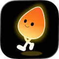
Step1stUnlock your apps with step goals. Reduce screen time and build healthier habits through movement.
Currently in TestFlight — early access available
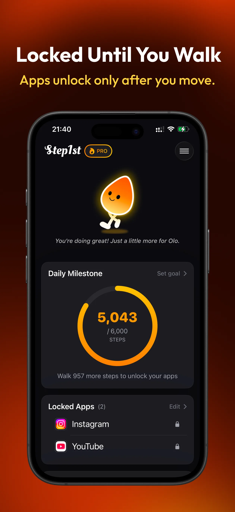
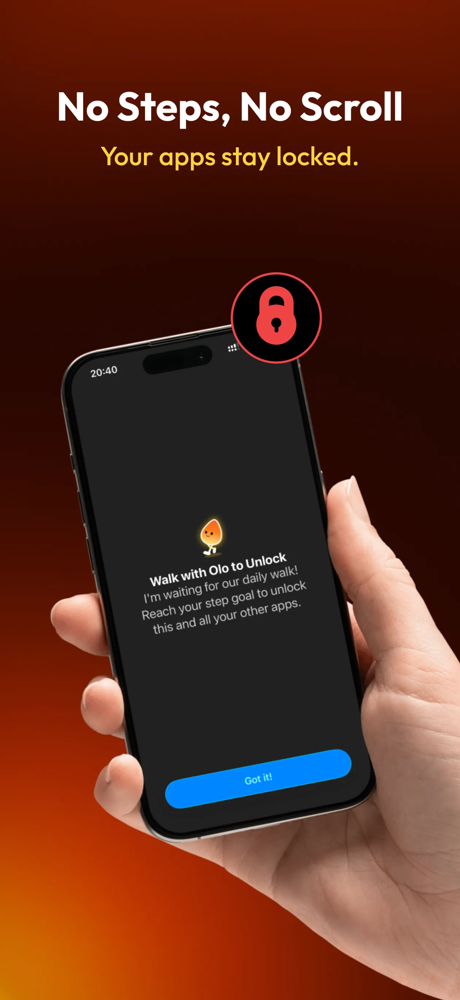
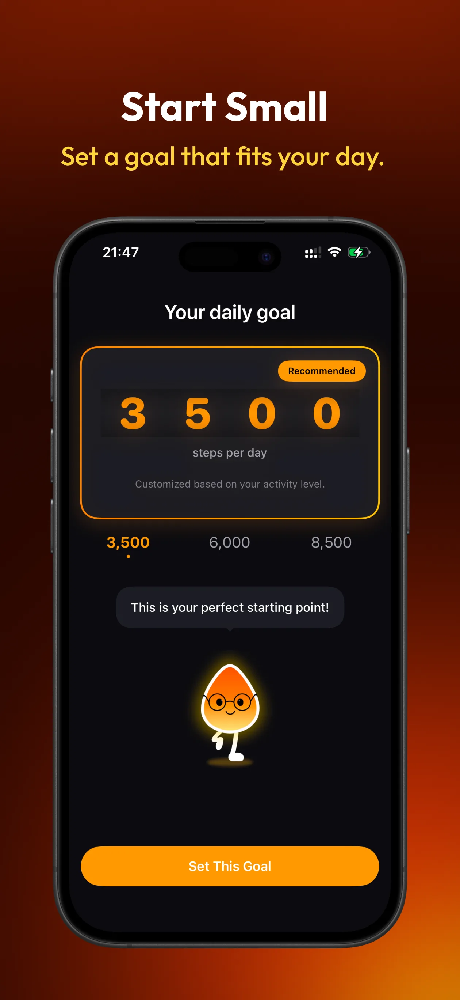
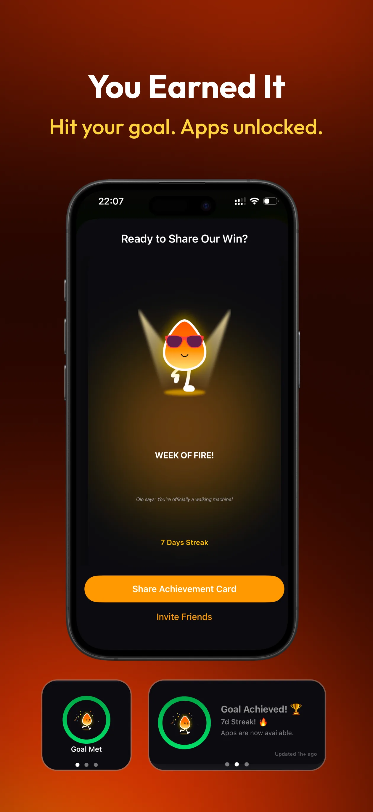
A minimal pause timer to stop, pause, and rest. Designed for intentional breaks.
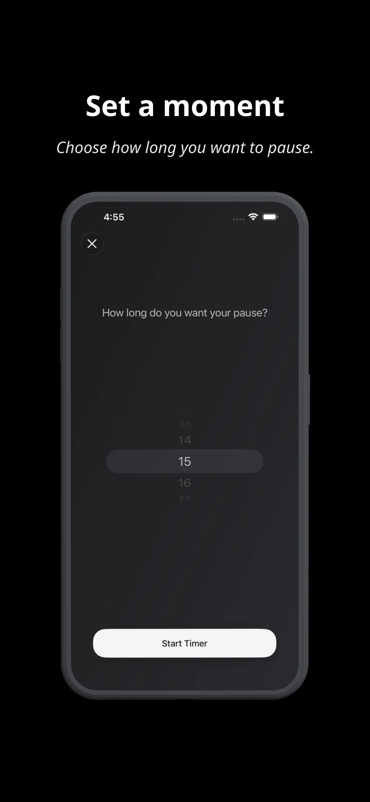
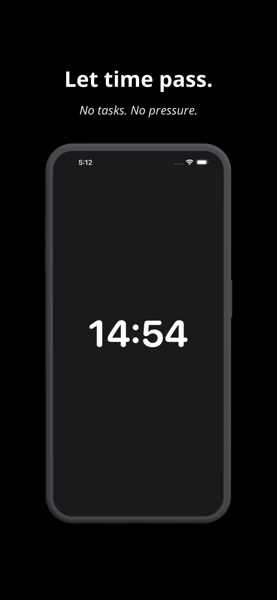
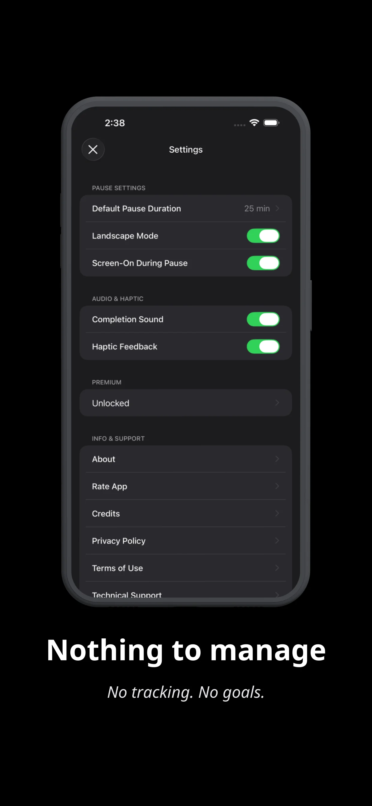
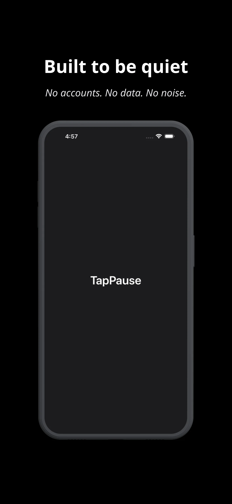


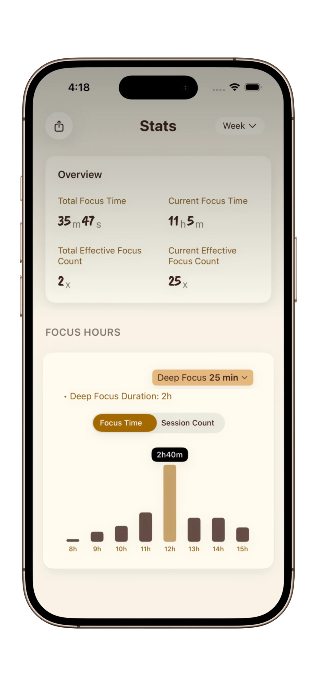

Convert videos into transparent GIF, APNG, and WebP with AI-powered background removal — fully offline on your Mac.
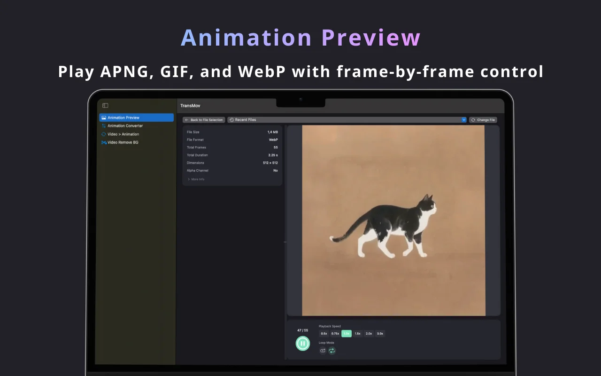
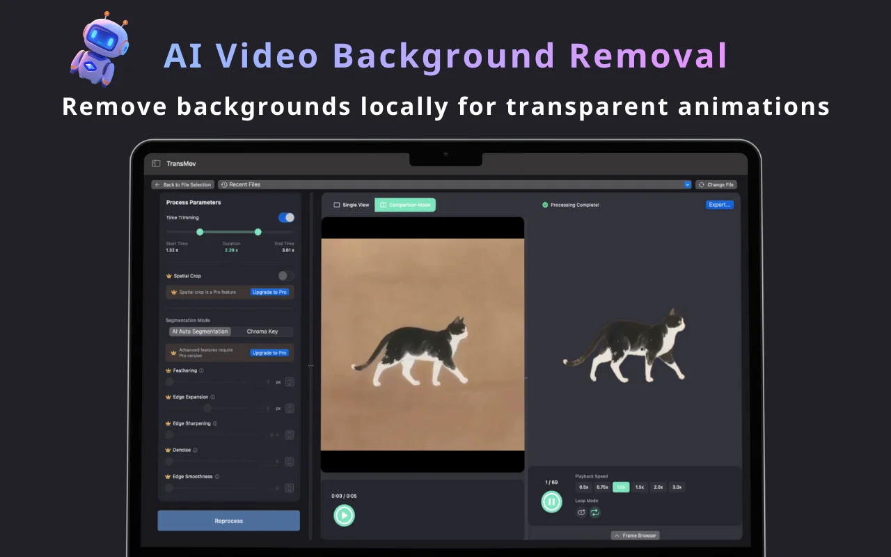
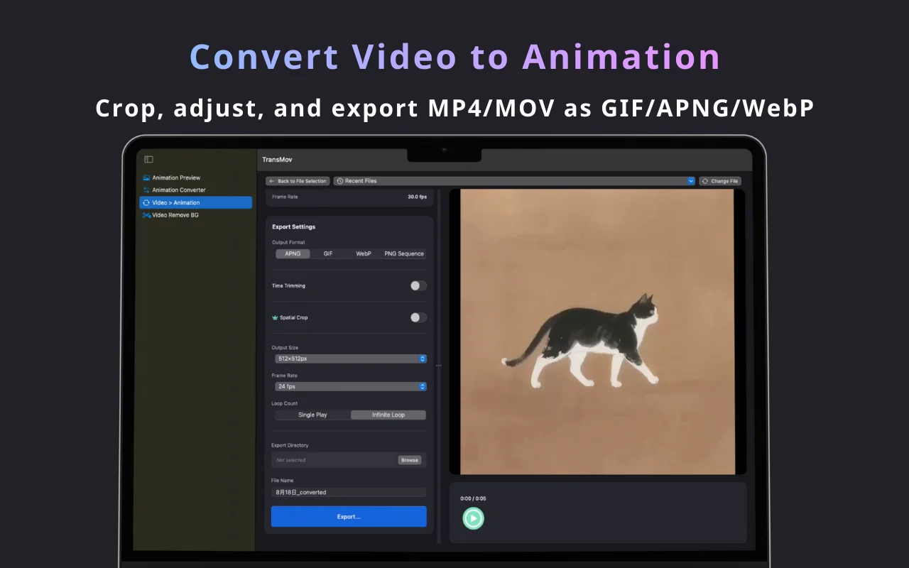
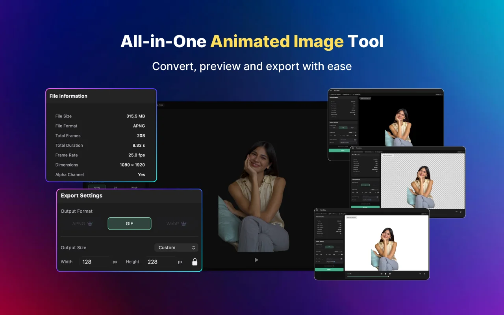
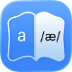
Convert English text into accurate IPA transcription. Supports sentence-level and word-aligned formatting.
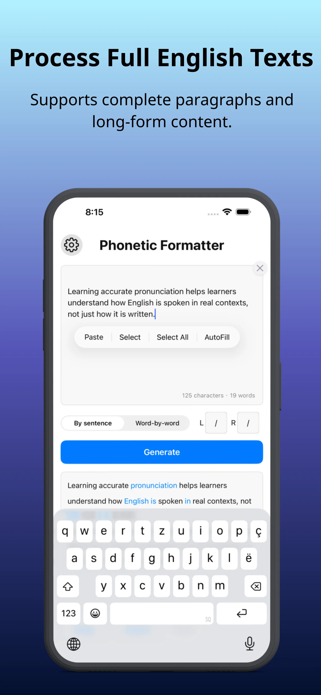
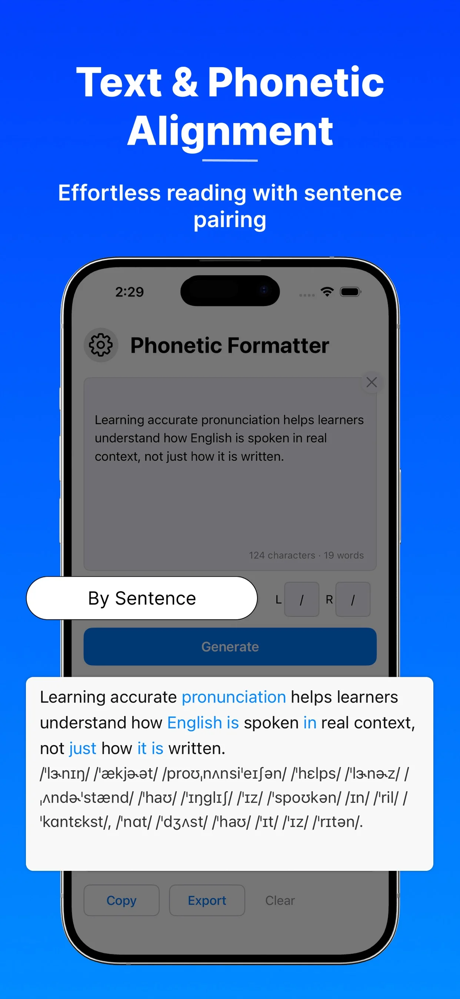
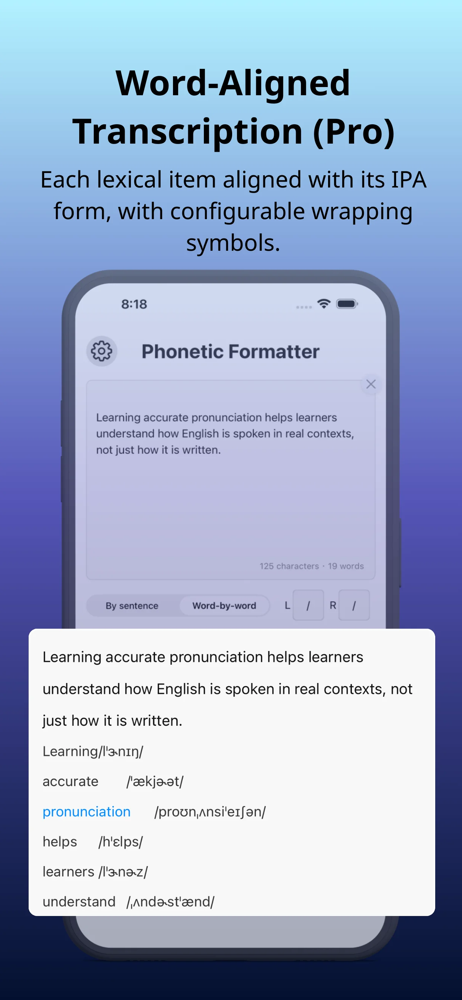
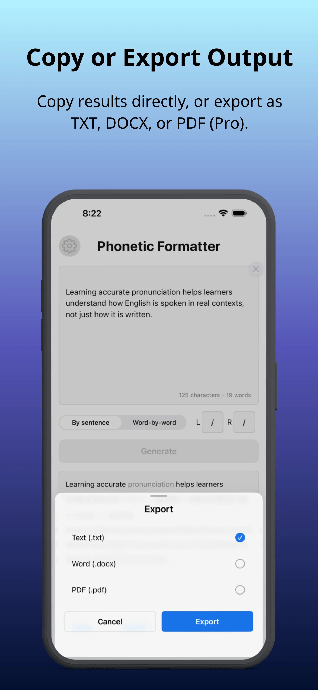
Content Lab
Where software meets practice. I built the Born To Speak Lab as a content companion to my apps — a space for role-play scripts, board-game prompts, and real-world practice to help you move from "learning" to "speaking" with confidence.
Integrated with Phonetic Formatter to bridge the gap between accurate IPA symbols and natural spoken English. It's a complete loop: from clear tools to fluent conversations.
A content initiative by Louis Builds · Bridging tools and fluency · Since 2024
Writing
Notes on craft, focus, and building independent apps.
How a struggle with high-quality animations led to the creation of TransMov and a leaner, smoother PurrrrrFocus.
Building a word-aligned transcription engine that works 100% offline.
Exploring the balance between Guochao aesthetics and deep work rituals.
My commitment to privacy: why none of my apps require an account.
Occasional notes on building, focus, and quiet software.
Read more on Substack →Built by Louis — independent developer exploring digital minimalism and offline-first apps.